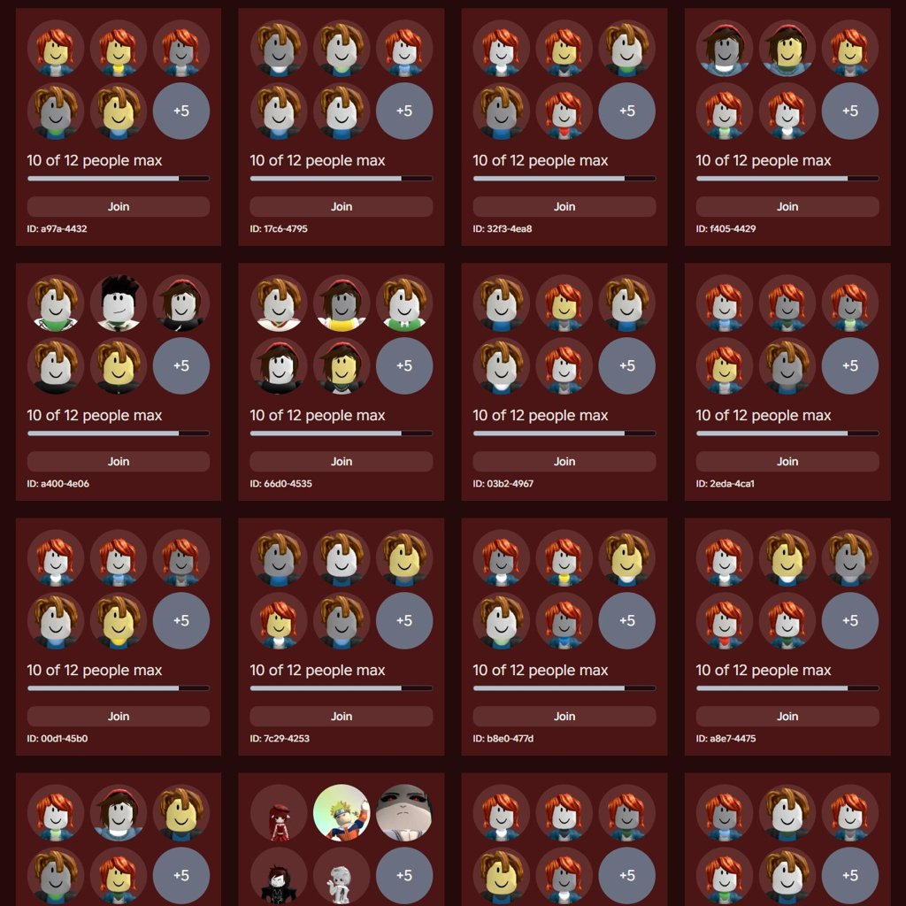
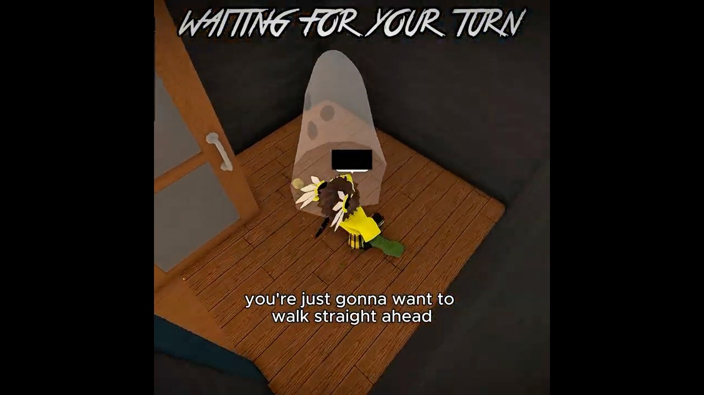
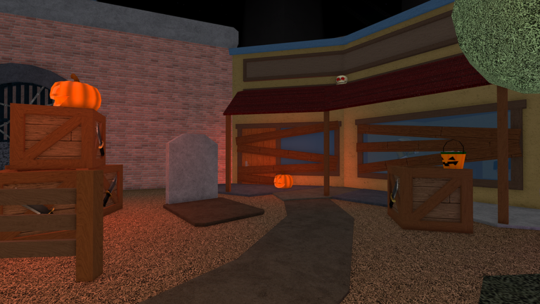

JocMurder Mystery 2
3 postări · cele mai noi primele · vezi în blog cu filtre

CONFIRMAT29 octombrie 2026Murder Mystery 2KreekCraft: „Problema cu boții pe Roblox n-a fost niciodată mai rea”, cu servere MM2 pline de avatare default
🤖 KreekCraft, unul dintre cei mai cunoscuți creatori Roblox, a postat pe X pe 24 oct (16:41 ora României): „The bot problem in Roblox has…
TREND SHORTS28 octombrie 2026Murder Mystery 2ROKEH trece de 960K cu „SECRET IN MM2 HALLOWEEN UPDATE”: meme sus, tutorial jos
ROKEH are un short din Murder Mystery 2, „SECRET IN MM2 HALLOWEEN UPDATE!😱👻”, de 48 de secunde, urcat pe 20 oct pe la 02:00 (ora…
CONFIRMAT19 octombrie 2026Murder Mystery 2Murder Mystery 2: Halloween 2026 a început aseară la 22:00, ține până pe 16 noiembrie
🔄 UPDATE 23 oct (✅ verificat pe pagina oficială Roblox): Halloween 2026 în MM2 e LIVE din 18 oct, 22:00, și ține până luni, 16 nov, la…